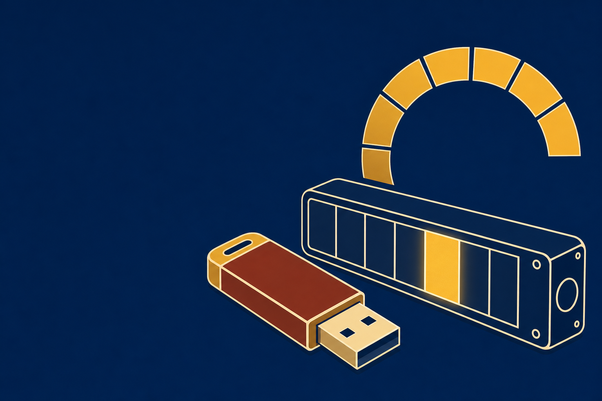
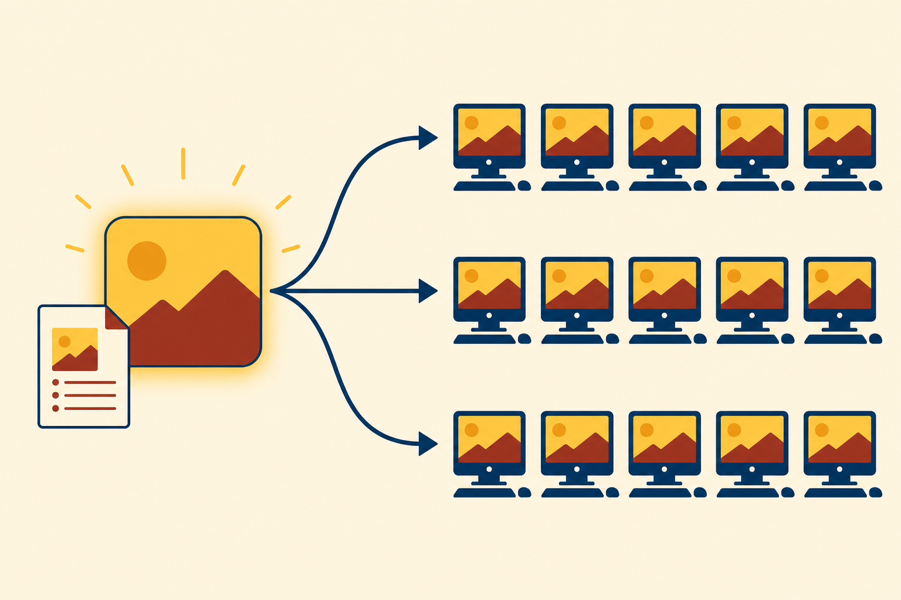
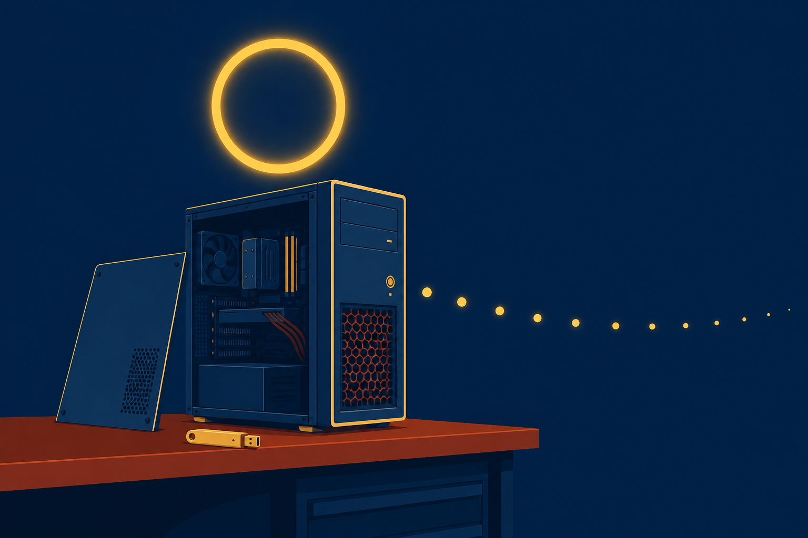

01
Compare
Windows editions, and match one to the machine in front of you.

Windows editions, install paths, boot devices, and disk layout: every decision that happens before setup draws its first window.
Start here: Your last computer arrived with Windows already on it. Who chose the edition, the disk layout, and the file system? Today, you do.
Windows editions, and match one to the machine in front of you.
between a clean install and an in-place upgrade, and defend the call.
the boot device and the disk layout, then walk one clean install to first sign-in.
The clinic is replacing a mix of outdated Windows editions, and the front desk goes first. Every decision this hour lands on this card.
Wipe it, rebuild it, sign in.
Small office, home office
Adds the work features
Pro plus bigger hardware
Volume licensing only
Volume licensing only
Older Windows shipped 32-bit and 64-bit builds. Windows 11 ships 64-bit only.
With a partner: Pick the edition for FD-01, and name the feature that rules Home out first.
Enterprise and Education sell through volume licensing only, and add DirectAccess VPN, AppLocker, and the Microsoft Desktop Optimization Pack.
The About page in Settings reports device specifications and Windows specifications, and the edition sits at the top of the second list.
Report before you plan.
Device specifications
Windows specifications
Windows 10: semi-annual feature updates. Support ended October 2025.
Windows 11: annual feature update cycle.
Repartition and reformat the drive, then install. Nothing on the disk survives.
FD-01 takes this pathThe new OS updates the existing install. User data remains on the system.
With a partner: Choose clean install or in-place upgrade, and say what happens to the drive on the path you rejected.

USB covers external, flash, and hot-swappable drives too. PXE is pronounced “pixie.”
The first 512 bytes store the partition table.
Up to 128 partitions in Windows. Single partitions grow past 2 TB.
ReFS also runs on Windows, but NTFS stays the common pick, especially in SOHO.
USB, first in firmware
GPT laid down
NTFS
Windows 11 Pro
First sign-in
With a partner: Choose Refresh or Reset, and name what each one takes from the machine.
Name two features Home lacks, and the edition FD-01 chose to get them.
Clean install or in-place upgrade: which one keeps user data, and what does the other do to the drive first?
MBR or GPT: which one allows 128 partitions and sizes past 2 TB?

Next step: Complete the CertMaster labs (Windows 11 Features/Desktop, Perform a Remote Network Installation, Support Windows Installation and Upgrade Issues). Chapter 17 leaves Windows for Linux and macOS.